The Replay Control Graphical User Interface (GUI) is a VCR-style control panel that allows the user to control the Replay component of the Real-Time Engine (RTE). The Replay Control GUI is opened by the Management GUI on completion of the RTE configuration. Replay mode allows the user to:
During the replay of a selected log, the user can record fullsets and transient logs, execute test procedures and External Hooks Programs, monitor alarms, and do any other function normally performed in real-time data acquisition.
The Replay Control GUI is shown below and described in the following table.
| Replay Control GUI | |
|---|---|
| Buttons and Fields | Function |
| 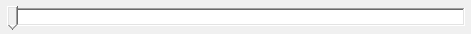 | The Slider Control allows the user to move to a specific time in the log file (also see Time field and Date field). The Slider Control is enabled only when the log is paused or stopped. The Slider position is updated during playback. |
| Playback can be run forward by selecting the Forward button or Crtl+Right Arrow from the keyboard. When the cursor is placed over the Forward button, a tool-tip, with the name of the button and the short-cut key combination, is displayed. |
|
| Playback can be paused by selecting the Pause button or Crtl+Down Arrow from the keyboard. When playback is paused, the time position within the log does not change. Playback can be resumed by selecting the Forward button (or Crtl+Right Arrow from the keyboard) or the Reverse button (or Crtl+Left Arrow from the keyboard). |
|
| Selecting the Stop button (or Crtl+Up Arrow from the keyboard) discontinues the playback and returns to the start of the log. | |
| Playback can be run backward by selecting the Reverse button or Crtl+Left Arrow from the keyboard. | |
| Playback can be single-stepped backward by selecting the Pause button and then selecting the Step Backward button or Alt+Left Arrow from the keyboard. | |
| Playback can be single-stepped forward by selecting the Pause button and then selecting the Step Forward button or Alt+Right Arrow from the keyboard. | |
| Playback can be skipped backward by selecting the Skip Backward button or Shift+Left Arrow from the keyboard. Skip Backward is enabled only when Continuous Logs are played back and whenever the replay is in a paused or stopped state. Skip Backward is disabled if a transient log is loaded or if a continuous log is loaded that contains only one log file. Skip Backward is disabled if the replay is at the start of the first continuous log file. From the middle of a file, selecting Skip Backward will move the pointer to the beginning of the current continuous log file. From the beginning of a file, selecting Skip Backward will move the pointer to the beginning of the previous continuous log file. |
|
| Playback can be skipped forward by selecting the Skip Forward button or Shift+Right Arrow from the keyboard. Skip Forward is enabled only when Continuous Logs are played back and whenever the replay is in a paused or stopped state. Skip Forward is disabled if a transient log is loaded or if a continuous log is loaded that contains only one log file. Skip Forward is disabled if the replay is in the last continuous log file. Selecting Skip Forward moves the pointer to the beginning of the next continuous log file. |
|
| 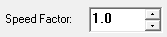 | The Speed Factor field displays the selected playback speed. The playback speed can be set with the up and down arrows or by entering a value from the keyboard. The value 1.0 represents normal playback. A value greater than 1 causes the log to skip samples during playback (e.g.: a speed factor of 5 would process every fifth sample in a log file). A value of less than 1.0 slows down the replay. |
| 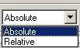 | Select Relative or Absolute from the drop-down box to switch between an absolute time reference and a time reference that is relative to the start of the log. |
| 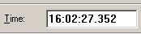 | The time is determined by the selection of an Absolute or Relative time reference in the drop-down box. To move to a specific time in the log file, enter the time from the keyboard or use the Slider Control. The Time field is accessible only when the log is paused or stopped. The Time field is updated automatically during playback. |
| 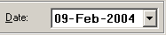 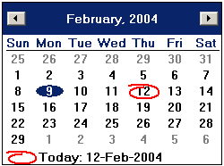 |
To move to a specific date in the log file, enter the date from the keyboard, use the Slider Control, or select a data from the drop-box. The calendar is displayed when the down-arrow on the drop-box is selected. The calendar is only available in the Absolute mode. During playback, the Date field is updated automatically. |
| The Hider Bar toggles to hide or reveal the lower half of the Replay Control GUI (i.e.: the Replay Options panel and the Help button). For example, the following Replay Control GUI is displayed if the Hider Bar is selected from the full Replay Control GUI: 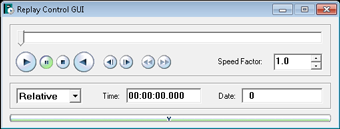 |
|
| 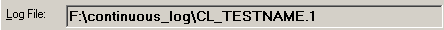 | The Log File field displays the name of the selected log file. |
| 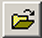 | Selecting this button opens a dialogue box, allowing the user to select a log file for replay (see Selecting a Log File for Replay). The name of the selected log file is displayed in the Log File field. |
| 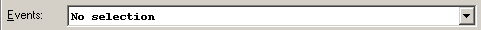Events box | The Events: drop-box field is enabled when Continuous Logs are being played back. The Events drop-box allows the user to move quickly to a particular event that occurred within the log and to play the log from the beginning of that event. |
| 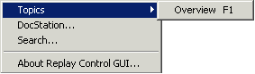 | Selecting Help >> displays the Help menu. From the Help menu, the user can:
|
When the cursor is placed over a button on the Replay Control GUI, a tool-tip, with the name of the button and the short-cut key combination, is displayed. When a button is selected, the colour of the button changes from blue to green. If the cursor is placed in the Slider Bar, the Start Time and the End Time is shown for the log selected for playback. |
|
To select a log for playback:
If no log is loaded, all buttons will be disabled.
Since the selected log file is not a continuous log, the Skip buttons and Events: box are disabled.
In a continuous log file, playback will stop if a log file has a different channel configuration than the log file which has previously been played. A UEL message is displayed that indicates the difference in channel configuration and advises the user to:
> skip to the next file if at the end of the current log file
> skip to the previous file if at the beginning of the current log file